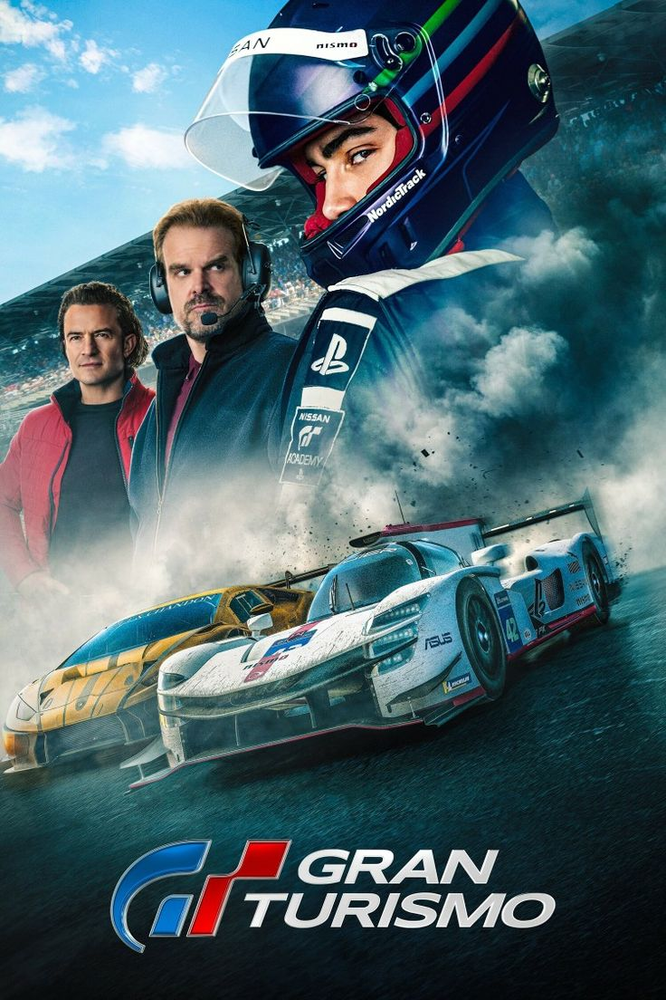
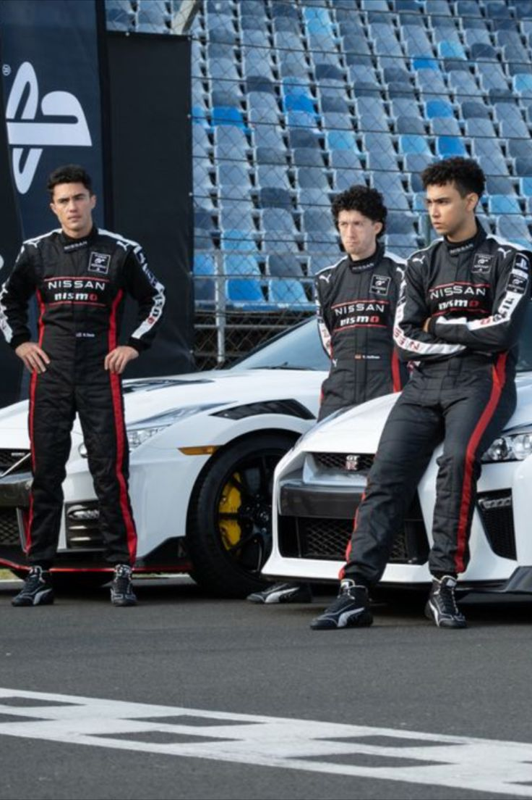
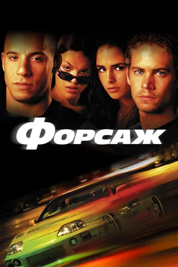
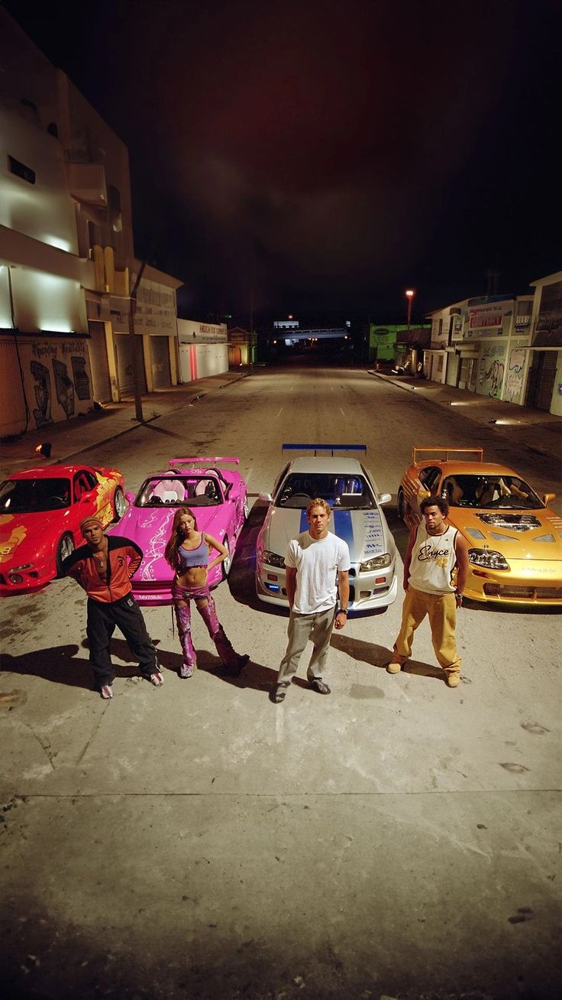
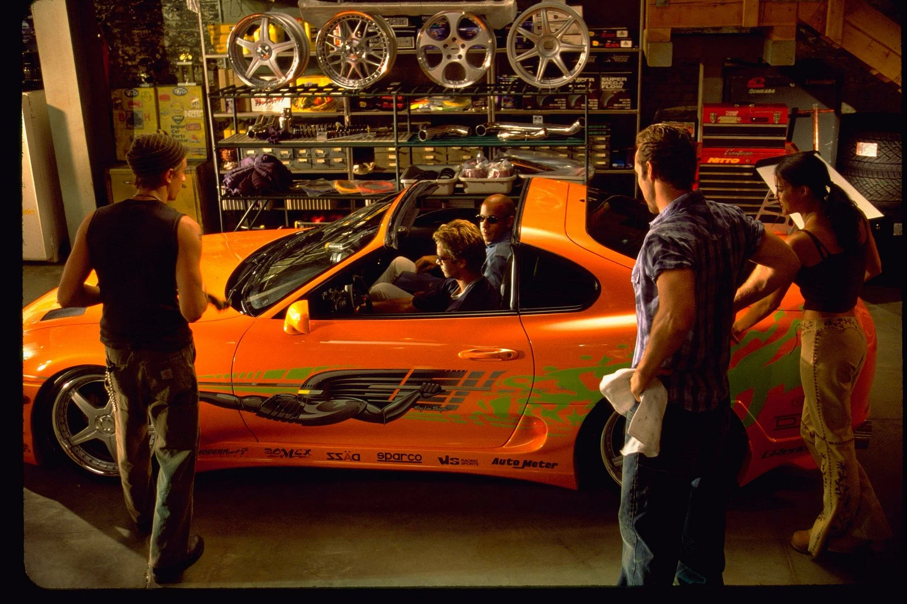
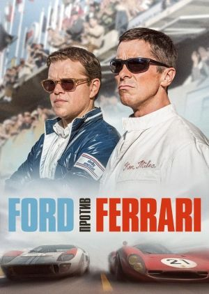
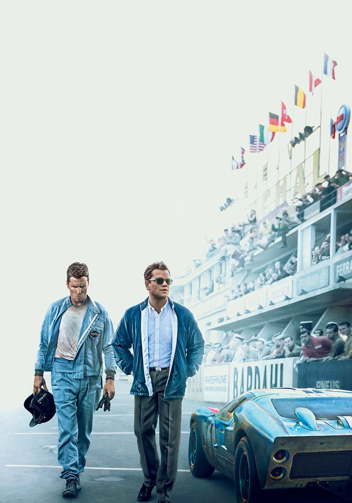
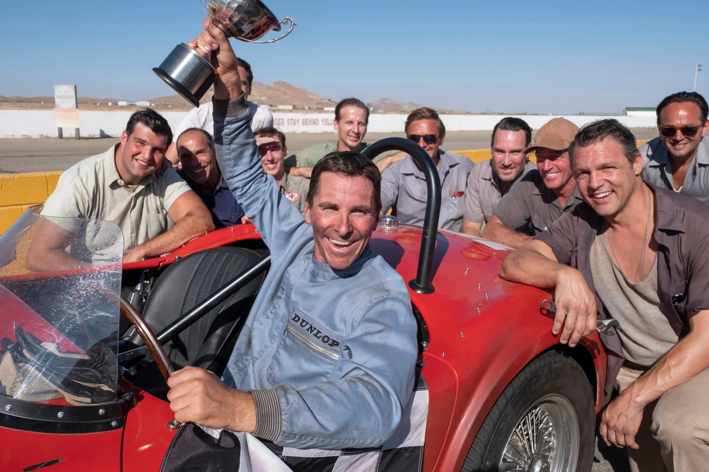

Топ 3 любимых фильмов
Список фильмов
Гран Туризмо
Краткое содержание
Фильм основан на реальной истории заядлого геймера (Арчи Мадекве), несостоявшегося автогонщика (Дэвид Харбор) и креативного маркетолога (Орландо Блум). Вместе они рискнут всем, чтобы найти своё место в самом элитном виде спорта. Это вовсе не игра, это вдохновляющая, захватывающая и насыщенная событиями история, которая докажет: нет ничего невозможного, если ты действительно хочешь победить.
 
О фильме
| Год | 2023 |
| Страна | США/Япония |
| Жанр | Боевик, драма, спорт |
| Режиссер | Нил Бломкамп |
Форсаж
Краткое содержание
Его зовут Брайан, и он — фанат турбин и нитроускорителей. Он пытается попасть в автобанду легендарного Доминика Торетто, чемпиона опасных и незаконных уличных гонок. Брайан также полицейский, и его задание — втереться в доверие к Торетто, подозреваемому в причастности к дерзким грабежам грузовиков, совершаемым прямо на ходу.
  О фильме
| Год | 2001 |
| Страна | США/Германия |
| Жанр | Боевик, триллер, криминал |
| Режиссер | Роб Коэн |
Ford против Ferrari
Краткое содержание
Сюжет повествует о группе американских инженеров и дизайнеров. В 1960-х под руководством конструктора Кэрролла Шелби и при поддержке британского гонщика Кена Майлса они должны были с нуля сделать абсолютно новый спорткар, способный опередить Феррари — непобедимого чемпиона 24-часовой гонки на выносливость Ле-Ман.
  О фильме
| Год | 2019 |
| Страна | США |
| Жанр | Биография, спорт, драма, боевик |
| Режиссер | Джеймс Мэнголд |